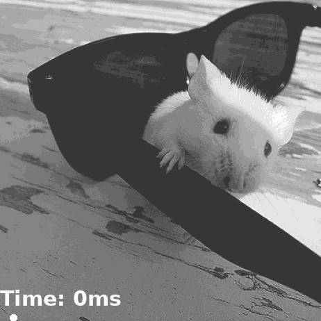
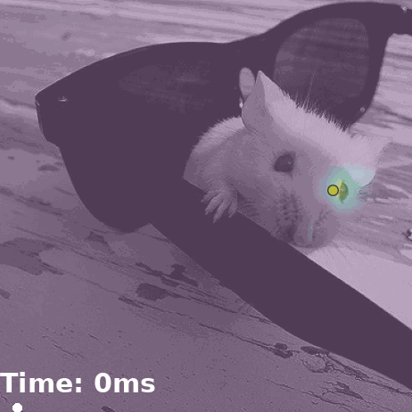
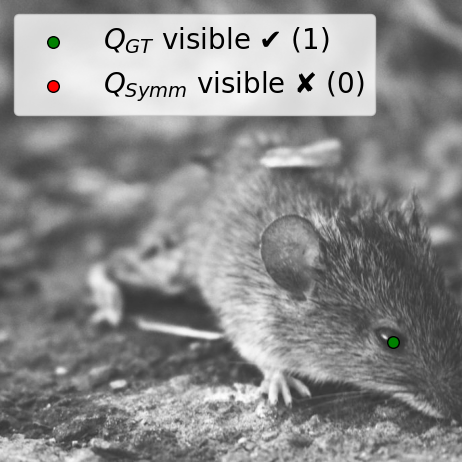
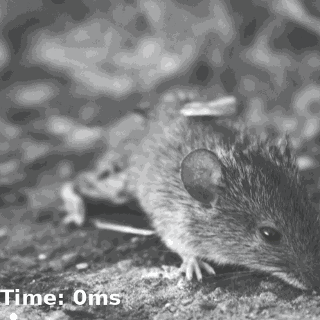
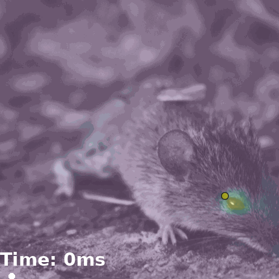
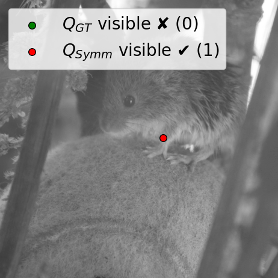
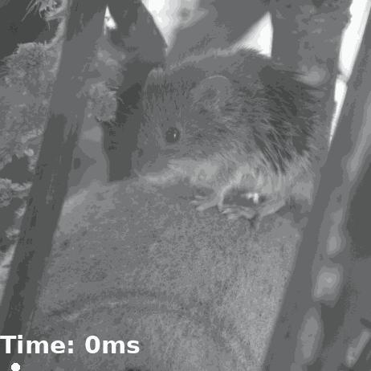
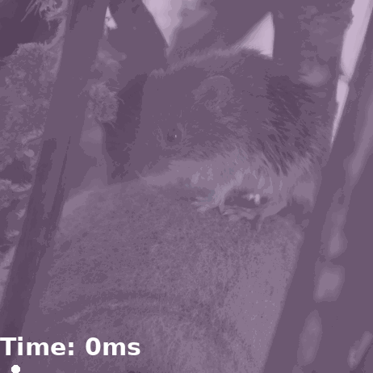

Qualitative Results. From left to right: source image with query keypoint, target image with ground truth correspondence, the baseline method, and our method. Our method is able to predict accurate correspondences in a fraction of the time compared to the baseline.